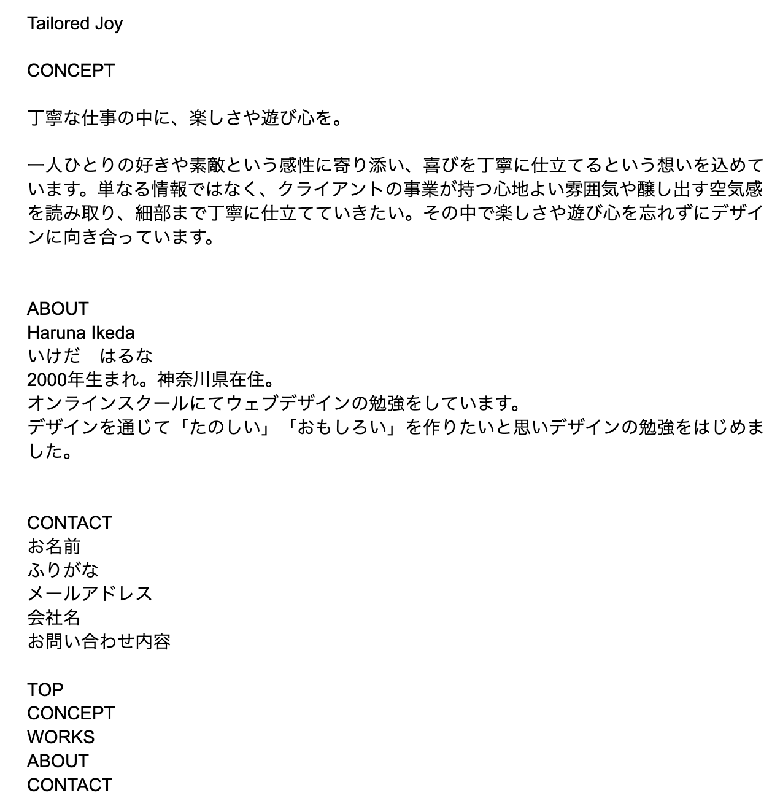
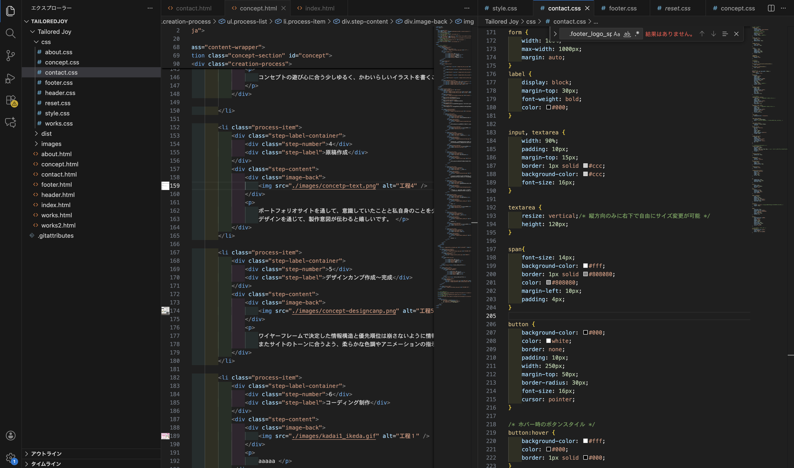
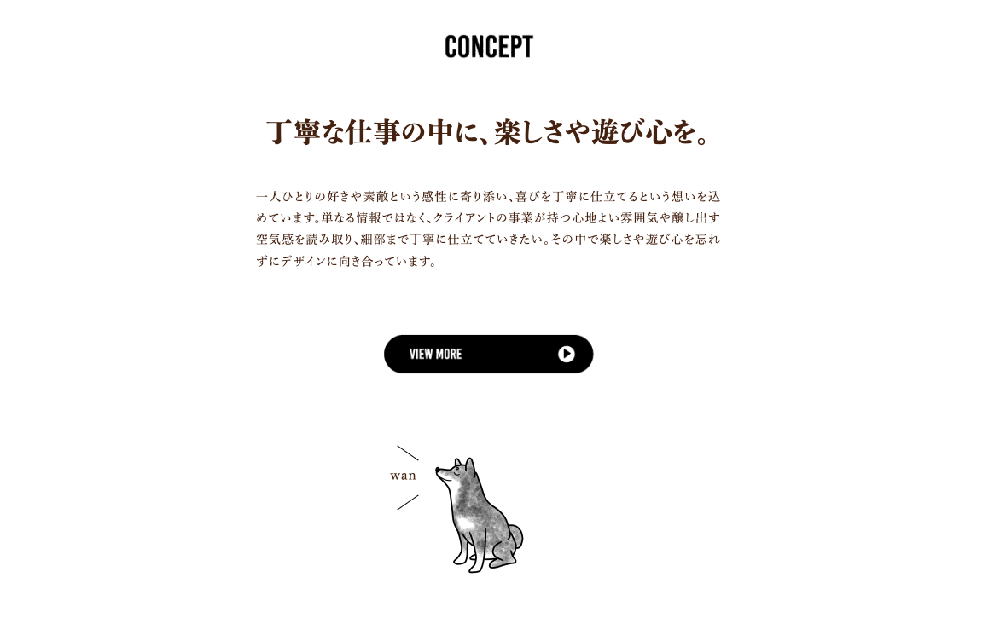
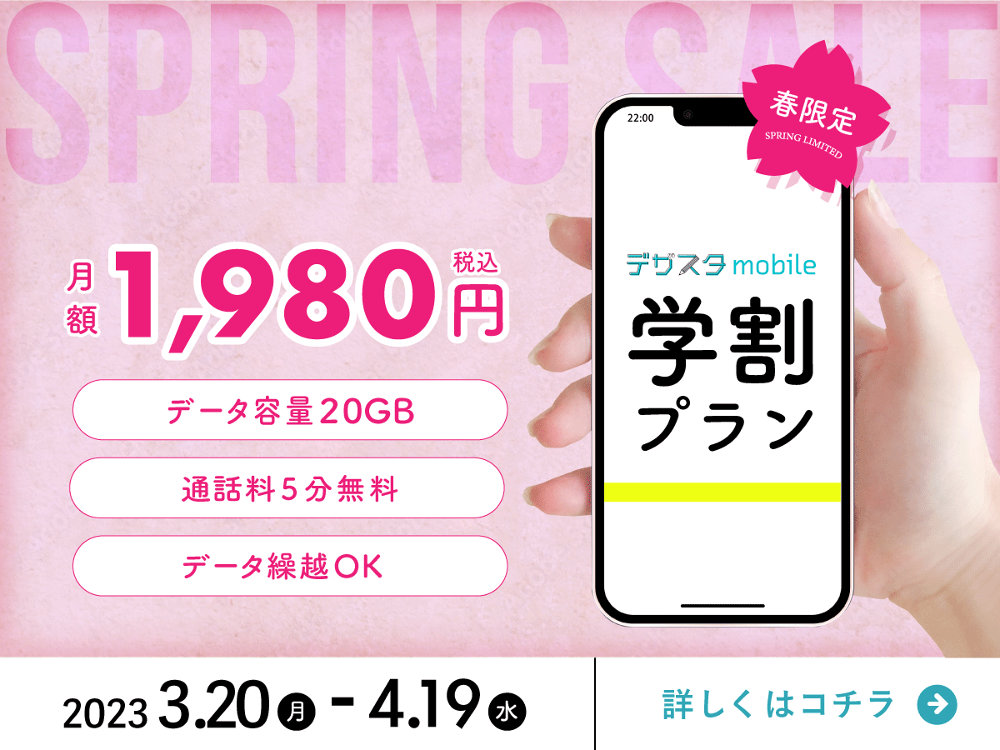

丁寧な仕事の中に、楽しさや遊び心を。
丁寧な仕事の中に、
楽しさや遊び心を。
・TAILORED：「仕立てる」という意味で、は、一人ひとりと対話を重ねて、その人の「好き」や「素敵」を大事にし、の感性に合わせて調整したいという想い
・JOY：丁寧な仕事の中に、デザインの楽しさや遊び心を共有し、共に楽しみ、ワクワクを提供したい


-
1コンセプトシート作成

コンセプト、世界観、サイト内配色、テーマ、ファーストビューに関してまとめ、サイトのトーン＆マナーやデザインを決め、視覚的な方向性を具体的に示しました。
製作目安：5日間 -
2ワイヤーフレーム

デザインの見た目を考えつつ、情報の優先順位を明確化することを意識しました。 ページごとに目的を定義し、ユーザーが迷わずページを回遊できるようボタンに一貫性を持たせ、情報配置がしっかり伝わるよう意識しました。
製作目安：5日間 -
3イラスト作成

コンセプトの遊び心に合う少しゆるく、かわいらしいイラストを書くことを意識しました。ペンの種類もクレヨン風の物を選び、かっちりせず親しみを感じられるようなものを作成しました。
-
4原稿作成
ポートフォリオサイトを通して、意識していたことと私自身のことを少しでも理解いただけるように素直に記述しました。 デザインを通じて、製作意図が伝わると嬉しいです。
-
5デザインカンプ作成〜完成

ワイヤーフレームで決定した情報構造と優先順位は崩さないように情報の階層や機能性を確保することを意識しました。 またサイトのトーンに合うよう、柔らかな色調やアニメーションの指示を記載し、コーディングへスムーズにつながるよう細かな部分まで調整し、作成しました。
-
6コーディング制作
デザインを元にhtmlとcssのコーディングを進めました。自分の意図した動作や構成にするため、思考錯誤しながら記述しました。 行き詰まる際にご確認いただきつつ、１から大まかな構成を作成しました。
製作目安：5日間 -
7動きの追加
JavascriptやJqery、slickなどを用いてポートフォリオサイトに動きを出させました。
製作目安：5日間 -
8完成